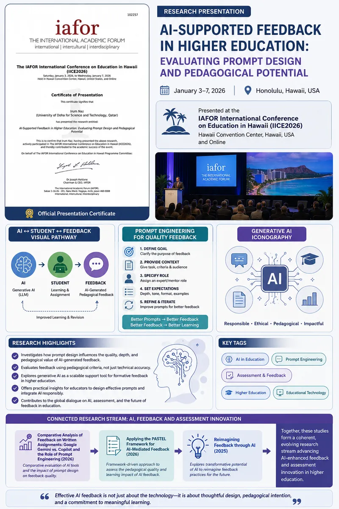

AI-Supported Feedback in Higher Education: Evaluating Prompt Design and Pedagogical Potential (2026)
Presented at the IAFOR International Conference on Education in Hawaii, this study examined how prompt engineering influences the quality and educational value of AI-generated feedback. The research highlights the importance of pedagogically informed prompt design in enhancing feedback effectiveness and supporting meaningful learning experiences in higher education.
